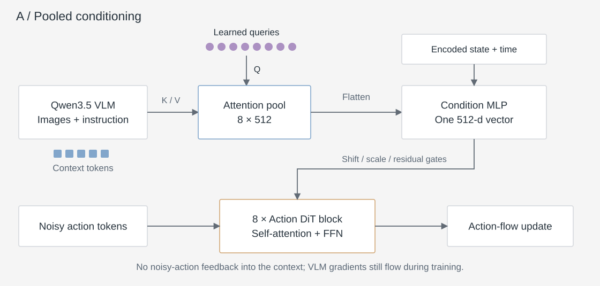
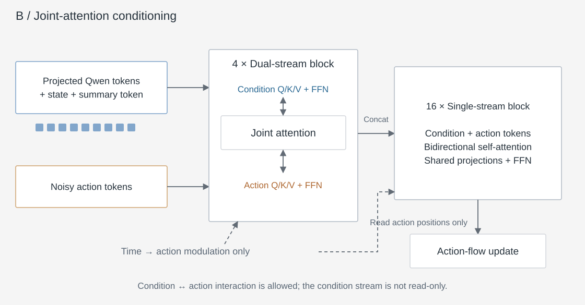
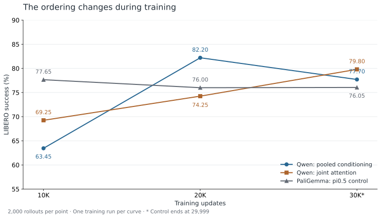
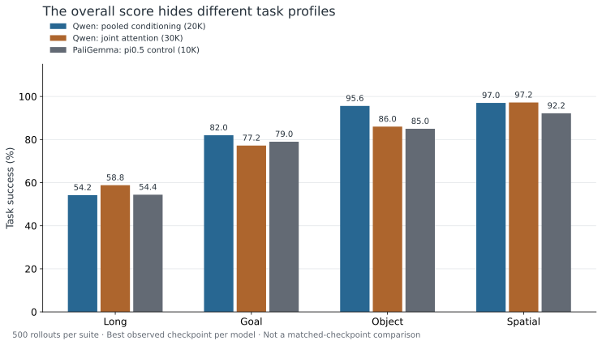

What should cross the VLM–action boundary?
Replacing a backbone is not simply replacing a checkpoint. A robot policy still needs a way to turn image and instruction features into continuous actions, combine them with robot state, and condition action generation at each denoising step.
I focused on two concrete choices. A pooled interface asks the VLM to provide a compact summary that modulates a small action network. A joint-attention interface preserves the context sequence and lets condition and action representations evolve together. The former imposes an explicit information bottleneck; the latter allows richer interaction but adds computation and a more coupled optimization problem.
The experiment is about usable model designs, not a pure topology ablation. The two Qwen policies share the pretrained backbone, but differ in action capacity and optimization. The PaliGemma control also changes backbone and implementation. The results therefore compare the tested systems—not the isolated causal effect of one attention mechanism.
Here, “without robot-policy pretraining” means the action network starts randomly initialized. The Qwen and PaliGemma vision–language models still start from their publicly released pretrained weights. These are downstream behavior-cloning experiments, not foundation-model pretraining or evaluation of the official robot-pretrained π0.5 checkpoint.
Compress the context; keep action generation small
The first design is inspired by ABC’s pooled conditioning, adapted here to Qwen3.5. Eight learned queries attend to the final VLM feature sequence. Their outputs are flattened and combined with encoded robot state and diffusion time to produce one conditioning vector.
This vector predicts the shifts, scales and residual gates for an eight-layer action Transformer. Self-attention mixes the noisy action tokens; the complete VLM sequence is not reread by a separate cross-attention layer in every action block.

Why try it? It separates representation extraction from repeated action denoising and keeps the action side to about 56M parameters. The trade-off is equally explicit: information discarded by the learned pool cannot be recovered by deeper action self-attention.
“One-way” describes the forward information path, not a frozen backbone or a stop-gradient: the VLM is updated during training. The implementation uses RMSNorm with zero-initialized shift/scale/gate projections—an AdaLN-Zero-style design, not literal LayerNorm throughout.
PyTorch · learned queries, followed by one conditioning vector
class QueryPool(nn.Module):
"""[B, L, vlm_width] -> [B, queries, width]; True means a valid token."""
def __init__(self, vlm_width, width=512, queries=8, eps=1e-6):
super().__init__()
self.width = width
self.input_norm = nn.RMSNorm(vlm_width, eps=eps)
self.key = nn.Linear(vlm_width, width, bias=False)
self.value = nn.Linear(vlm_width, width, bias=False)
self.query = nn.Parameter(torch.randn(queries, width) * 0.02)
self.query_norm = nn.RMSNorm(width, eps=eps)
self.key_norm = nn.RMSNorm(width, eps=eps)
self.output_norm = nn.RMSNorm(width, eps=eps)
def forward(self, context, valid):
# At least one context token must be valid in each example.
if not valid.any(-1).all():
raise ValueError("An example cannot have an empty valid context")
z = self.input_norm(context)
k, v = self.key_norm(self.key(z)), self.value(z)
q = self.query_norm(self.query).expand(context.shape[0], -1, -1)
logits = torch.einsum("bqd,bkd->bqk", q.float(), k.float())
logits = logits / math.sqrt(self.width)
weights = logits.masked_fill(~valid[:, None], -torch.inf).softmax(-1)
pooled = torch.einsum("bqk,bkd->bqd", weights.to(v.dtype), v)
return self.output_norm(pooled)
def make_condition(pool, state_encoder, time_encoder, condition_encoder,
context, valid, state, time_embedding):
# The eight pooled tokens are FLATTENED, not appended as a policy prefix.
pooled = pool(context, valid).flatten(1)
parts = (pooled, state_encoder(state), time_encoder(time_embedding))
return condition_encoder(torch.cat(parts, dim=-1))The recorded configuration uses context width 2,560, eight queries of width 512, and a final condition width of 512. The condition encoder is an MLP. Time arrives as a sinusoidal embedding. The compact helper omits most production guards; the downloaded file includes all imports.
PyTorch · how the condition changes an action block
class PooledActionBlock(nn.Module):
"""Action self-attention + FFN, modulated by one pooled condition."""
def __init__(self, width=512, heads=8, intermediate=2048):
super().__init__()
self.attention_norm = nn.RMSNorm(width, eps=1e-6)
self.ffn_norm = nn.RMSNorm(width, eps=1e-6)
self.attention = ActionSelfAttention(width, heads)
self.ffn = SwiGLU(width, intermediate)
self.modulation = nn.Linear(width, 6 * width)
nn.init.zeros_(self.modulation.weight)
nn.init.zeros_(self.modulation.bias)
def forward(self, x, condition):
a_shift, a_scale, a_gate, f_shift, f_scale, f_gate = (
self.modulation(condition).chunk(6, -1))
z = self.attention_norm(x) * (1 + a_scale[:, None]) + a_shift[:, None]
x = x + a_gate[:, None] * self.attention(z)
z = self.ffn_norm(x) * (1 + f_scale[:, None]) + f_shift[:, None]
return x + f_gate[:, None] * self.ffn(z)ActionSelfAttention and SwiGLU are included in the downloadable teaching file. The condition generates separate shifts, scales and gates for attention and FFN residuals. Zero-initialized gates make this block an identity at initialization; this does not imply identity of the whole policy. The trained architecture stacks eight blocks and has a separate final normalization and output projection.
Keep the context sequence inside the action model
The second design projects the VLM sequence to a width of 1,536 and adds robot-state and learned-summary tokens. Four dual-stream blocks use separate condition/action projections and feed-forward networks, but concatenate their queries, keys and values for a joint attention operation. Sixteen subsequent single-stream blocks process the combined sequence.

Both streams can read each other. Timestep modulation is applied only to action positions, yet the condition stream can still become noise-dependent by attending to the noisy actions. This is different from a read-only visual–language prefix. It is also not a conventional action self-attention layer followed by an independent cross-attention layer.
Why try it? The action model can revisit individual context tokens and revise its internal conditioning through depth. In this implementation, that flexibility comes with about 1.105B action-side parameters, versus 56M for the pooled design. Parameter count alone does not establish a latency or throughput difference; those were not measured as a matched comparison here.
The retained implementation includes one learned summary token. Although named “skill token” in the source, it has no skill supervision, router or experts; it should not be interpreted as evidence of skill discovery.
PyTorch · two streams, one joint attention operation
def joint_mask(condition_valid, action_tokens):
"""SDPA boolean mask: True allows attention; no causal separation."""
b, c = condition_valid.shape
action_valid = torch.ones(b, action_tokens, dtype=torch.bool,
device=condition_valid.device)
valid = torch.cat((condition_valid, action_valid), -1)
mask = valid[:, None, None, :].expand(b, 1, c + action_tokens,
c + action_tokens).clone()
# Padded condition queries are discarded; match their safe self-edge.
diagonal = torch.arange(c, device=condition_valid.device)
mask[:, 0, diagonal, diagonal] = True
return mask
class JointAttention(nn.Module):
"""Dual-stream projections, ONE bidirectional attention operation.
Inputs are already normalized (and action positions time-modulated).
Residual additions and the two streams' FFNs live in the enclosing block.
"""
def __init__(self, width, heads):
super().__init__()
self.heads = heads
self.condition_qkv = nn.Linear(width, 3 * width)
self.action_qkv = nn.Linear(width, 3 * width)
self.condition_output = nn.Linear(width, width)
self.action_output = nn.Linear(width, width)
def _qkv(self, x, projection):
b, n, d = x.shape
qkv = projection(x).reshape(b, n, 3, self.heads, d // self.heads)
return tuple(z.transpose(1, 2) for z in qkv.unbind(2))
def forward(self, condition, action, mask):
qc, kc, vc = self._qkv(condition, self.condition_qkv)
qa, ka, va = self._qkv(action, self.action_qkv)
q, k, v = (torch.cat(pair, dim=2)
for pair in ((qc, qa), (kc, ka), (vc, va)))
y = F.scaled_dot_product_attention(q, k, v, attn_mask=mask,
dropout_p=0.0)
y = y.transpose(1, 2).flatten(2)
c = condition.shape[1]
# Both condition and action are updated; not action-only cross-attn.
return (self.condition_output(y[:, :c]),
self.action_output(y[:, c:]))Q/K/V mean queries, keys and values; FFN is the feed-forward network. This helper is the attention sublayer only: the enclosing dual-stream block adds residuals and separate FFNs. Inputs have already been normalized, with timestep modulation on action positions. Both returned streams are updated. The sixteen later single-stream blocks instead share projections across the concatenated sequence.
Two viable paths, different learning trajectories
The main comparison uses standard LIBERO’s four suites: 40 tasks, each evaluated from 50 official initial states. Each checkpoint therefore has 2,000 rollouts. Policies predict 10 actions, execute the first 5, then replan; action generation uses 10 flow-integration steps.
The scores below are reproduced from the retained experiment summary and checked for internal consistency. The original rollout logs were not independently re-audited for this article.

| Model | 10K | 20K | 30K |
|---|---|---|---|
| Qwen · pooled conditioning | 63.45 | 82.20 | 77.70 |
| Qwen · joint attention | 69.25 | 74.25 | 79.80 |
| PaliGemma · π0.5 control | 77.65 | 76.00 | 76.05* |
* The final PaliGemma checkpoint is step 29,999. Each curve is one training run; 2,000 rollouts are not 2,000 independent training seeds. These are task-execution results on the standard benchmark, not an unseen-task or robustness evaluation.
The pooled policy’s best observed score is 82.20%, 4.55 percentage points above the control’s best observed 77.65%. The joint-attention policy reaches 79.80%, 2.15 points above the same reference. But at 10K the control leads both; at 30K the joint policy leads the pooled policy. A single endpoint or selected maximum would hide that reversal.

The suite breakdown also changes the interpretation. At its best overall checkpoint, the pooled model’s Long score is 54.2%, essentially level with the control’s 54.4%; its larger gains are in Object and Spatial. The joint model reaches 58.8% on Long but trails the pooled model on Object. Neither result demonstrates uniform improvement across capabilities.
Training settings and what is not controlled
| Setting | Pooled Qwen | Joint Qwen | PaliGemma–π0.5 |
|---|---|---|---|
| Robot-policy initialization | None | None | None |
| Action-side parameters | ≈56M | ≈1.105B | Gemma-300M expert family |
| Backbone / action peak LR | 5e−5 / 5e−5 | 5e−6 / 5e−5 | 5e−5 / 5e−5 |
| Batch / training length | 256 / 30K | 256 / 30K | 256 / 30K |
| Warmup / later schedule | 10K steps / constant | ||
| Training implementation | PyTorch; no EMA | PyTorch; no EMA | OpenPI JAX; EMA 0.999 |
| Weight decay | 1e−10 | 0.01 | 1e−10 |
| State input | Explicit state encoder | Explicit state token | No explicit robot-state token in the reviewed configuration |
All three use shuffled training transitions, rather than the task/episode-quota sampler used in earlier exploratory runs. The Qwen policies use 256-pixel inputs and a 768-token context cap. The control uses 224-pixel inputs; its configuration disables discrete-state tokenization, and the π0.5 action branch does not add a continuous-state token. Robot pose may still be visible in the images. This is another reason to describe it as the tested control, not as an input-matched baseline.
Backbone, preprocessing, state handling, normalization, action capacity, optimizer details and EMA prevent this from being a single-variable comparison; equal optimizer steps are not equal compute.
The recorded evaluation protocol specifies environment seed 7, policy seed 42 and episode-keyed action noise. No multiple-training-seed confidence estimate is reported. The historical checkpoint sweep supports a descriptive comparison, not a statistical-significance claim.
Complexity needs a reason beyond flexibility
A compact interface is a serious baseline. The small pooled model reached the highest observed score in this non-policy-pretrained group. I would retain it as the simpler starting point unless a specific failure motivates token-level interaction. This is a design judgment from the tested systems, not proof that pooling is universally better.
Joint attention is viable, but its benefit needs to be localized. The clean-loader joint model continued improving through 30K and did better on Long at its selected checkpoint. That is a reason to investigate how it uses context—not to dismiss the architecture, or assume its extra capacity has already paid off.
Follow behavior through training. The pooled model dropped from 82.20% to 77.70% between 20K and 30K. More training did not automatically yield a better policy. The record establishes a decline in rollout performance; it does not, by itself, identify overfitting or semantic degradation as the cause.
The most useful takeaway is not “Qwen beats π0.5.” It is that a pretrained VLM can support more than one effective action interface, and the choice should be argued through information flow, optimization, task-level behavior and implementation cost.
What the comparison leaves open
Does noisy action corrupt the condition stream?
The joint model allows noisy actions to update condition tokens. The pooled model does not. It is plausible that isolating the condition representation makes learning easier, but these runs do not isolate that mechanism: action size and optimization change at the same time. A read-only condition mask under a matched recipe would answer a narrower causal question. It has not been established by this report.
What about initializing the action model from π0.5?
A separate joint-attention variant copied approximately 430.10M action-side parameters from π0.5 and reached 80.60% at 30K. It is excluded from the main comparison because it uses robot-policy pretrained weights and a different historical sampling recipe.
The important implementation lesson is that exact tensor copying is not function preservation. Inserting new blocks and changing which tokens can attend to each other changes the inputs and computation of the inherited layers, even when every copied tensor matches exactly. A future weight-transfer design should test the full forward function, not just tensor shapes and equality.
Source and evidence boundaries
The diagrams describe the implemented pooled action module and retained clean-loader joint-attention module, not an exact reproduction of ABC’s released model. Compact code below each method is a teaching adaptation: distributed training, model loading and production guards are omitted.
The numerical source is the retained architecture-study phase report. Its three checkpoint points per main model and selected-suite values are reproduced here without interpolation or synthetic measurements. The earlier quota-sampler experiments, partially pretrained variants and separate DINO/CLIP ABC port are not mixed into the headline curves.
There are no real-robot results, cross-embodiment claims or measured deployment-speed gains in this article. The unresolved question is how these interfaces behave with larger robot pretraining and broader tasks.
Methods this study builds on
- Allshire et al. — Scalable Behavior Cloning with Open Data, Training, and Evaluation. Source of the ABC pooled-conditioning design reference; this study uses Qwen and LIBERO rather than reproducing its full training setup.
- Esser et al. — Scaling Rectified Flow Transformers for High-Resolution Image Synthesis. Separate modality weights with joint, bidirectional attention; inspiration for the dual-stream design, not evidence for these robot results.
- Qwen3.5-4B official model. The pretrained vision–language backbone used by both Qwen policies.
- Physical Intelligence — OpenPI. π0.5 architecture and PaliGemma initialization utilities used by the non-policy-pretrained control.
- LIBERO. The task suites and evaluation environments.